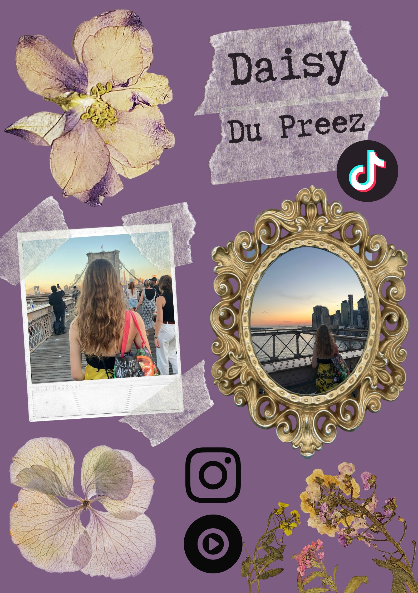
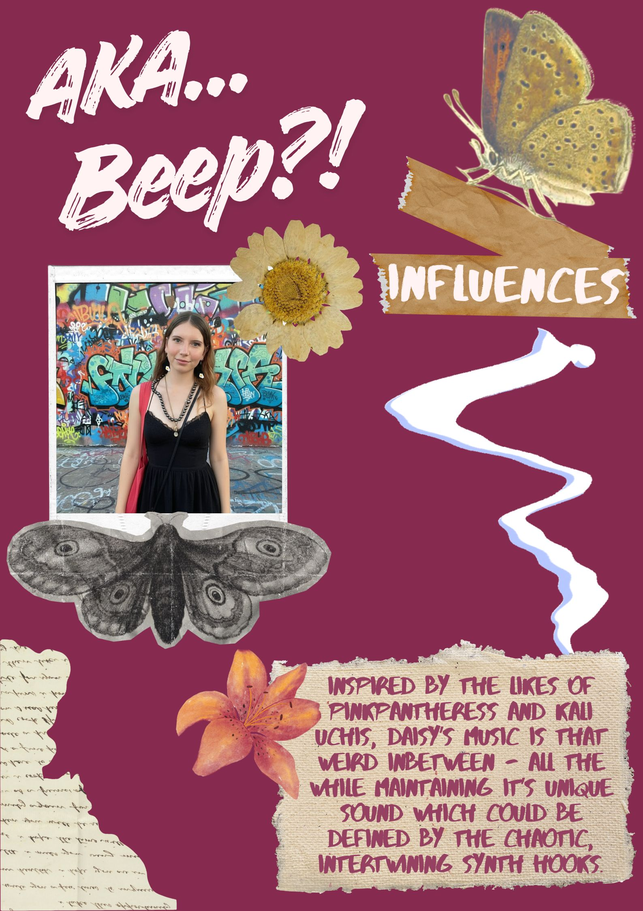
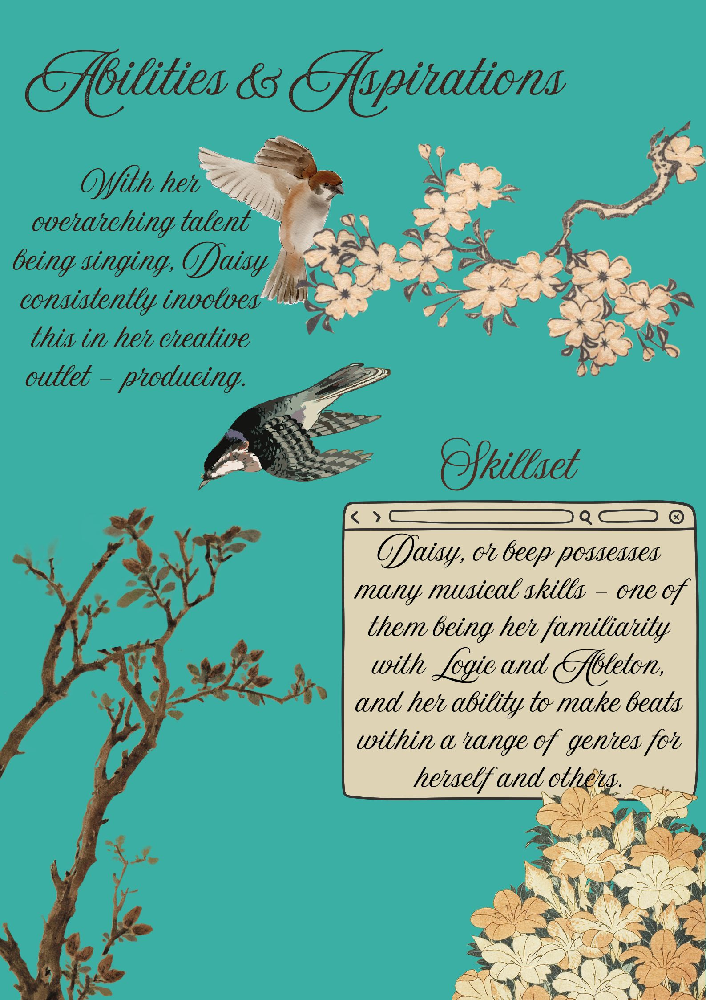

About



The above Electronic Press Kit snippets focus on my branding, using a colourful and contrasting visual identity, while also referencing my key inspirations to contextualise my creative direction.
The audio tracks included below feature my own singing and production work, showing my development as a musician through experimentation, collaboration, and feedback. Over time, I’ve refined my artistic direction and begun to establish a clearer personal sound, while continuing to evolve my approach to production.
I am still developing my mixing skills, and this remains an ongoing focus within my practice as I work towards improving the clarity, balance, and overall polish of my productions.
Selected Tracks
What I was producing before college
Developed throughout the college year
My main project for the end of year showcase